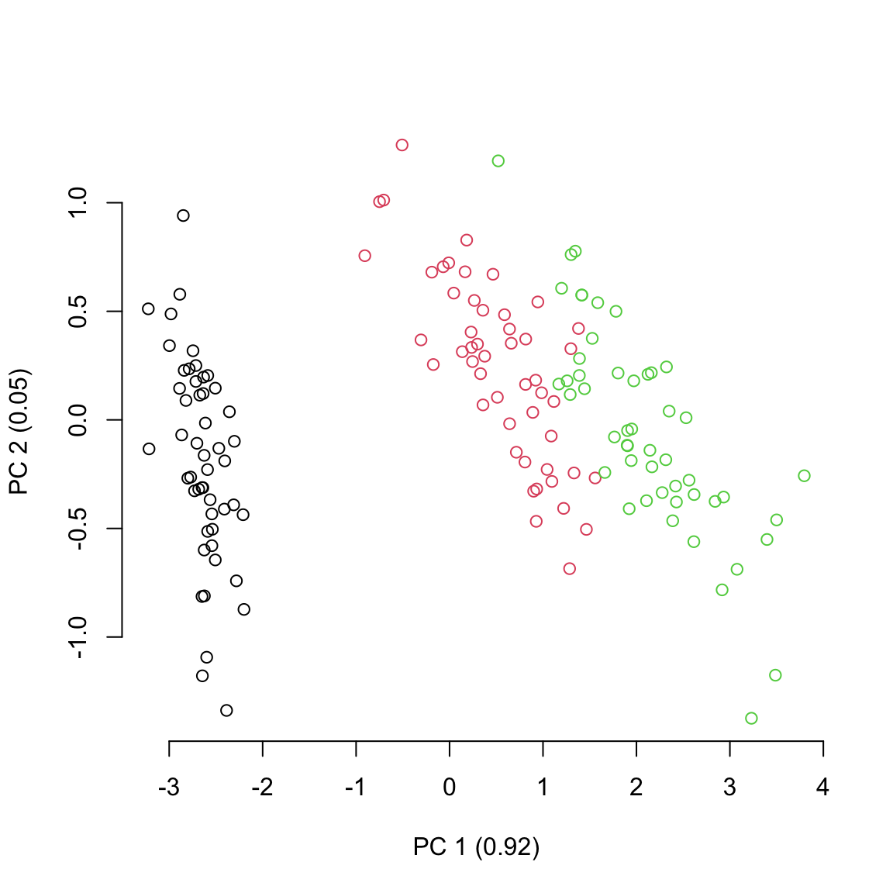

5 Making stuff up!
The dispRity package also offers some advanced data simulation features to allow to test hypothesis, explore ordinate-spaces or metrics properties or simply playing around with data!
All the following functions are based on the same modular architecture of the package and therefore can be used with most of the functions of the package.
5.1 Simulating discrete morphological data
The function sim.morpho allows to simulate discrete morphological data matrices (sometimes referred to as “cladistic” matrices).
It allows to evolve multiple discrete characters on a given phylogenetic trees, given different models, rates, and states.
It even allows to include “proper” inapplicable data to make datasets as messy as in real life!
In brief, the function sim.morpho takes a phylogenetic tree, the number of required characters, the evolutionary model, and a function from which to draw the rates.
The package also contains a function for quickly checking the matrix’s phylogenetic signal (as defined in systematics not phylogenetic comparative methods) using parsimony.
The methods are described in details below
set.seed(3)
## Simulating a starting tree with 15 taxa as a random coalescent tree
my_tree <- rcoal(15)
## Generating a matrix with 100 characters (85% binary and 15% three state) and
## an equal rates model with a gamma rate distribution (0.5, 1) with no
## invariant characters.
my_matrix <- sim.morpho(tree = my_tree, characters = 100, states = c(0.85,
0.15), rates = c(rgamma, 0.5, 1), invariant = FALSE)
## The first few lines of the matrix
my_matrix[1:5, 1:10]## [,1] [,2] [,3] [,4] [,5] [,6] [,7] [,8] [,9] [,10]
## t10 "1" "0" "1" "0" "1" "0" "0" "1" "0" "0"
## t1 "0" "0" "1" "0" "0" "0" "0" "1" "0" "0"
## t9 "0" "0" "1" "0" "0" "0" "0" "1" "0" "0"
## t14 "1" "0" "1" "0" "0" "0" "0" "1" "0" "0"
## t13 "1" "0" "1" "0" "0" "0" "0" "1" "0" "0"## Checking the matrix properties with a quick Maximum Parsimony tree search
check.morpho(my_matrix, my_tree)##
## Maximum parsimony 144.0000000
## Consistency index 0.7430556
## Retention index 0.9160998
## Robinson-Foulds distance 2.0000000Note that this example produces a tree with a great consistency index and an identical topology to the random coalescent tree! Nearly too good to be true…
5.1.1 A more detailed description
The protocol implemented here to generate discrete morphological matrices is based on the ones developed in (Thomas Guillerme and Cooper 2016; O’Reilly et al. 2016; Puttick et al. 2017; E. et al., n.d.).
- The first
treeargument will be the tree on which to “evolve” the characters and therefore requires branch length. You can generate quick and easy random Yule trees usingape::rtree(number_of_taxa)but I would advise to use more realistic trees for more realistic simulations based on more realistic models (really realistic then) using the functiontree.bdfrom thediversitreepackage (FitzJohn 2012). - The second argument,
characteris the number of characters. Pretty straight forward. - The third,
statesis the proportion of characters states above two (yes, the minimum number of states is two). This argument intakes the proportion of n-states characters, for examplestates = c(0.5,0.3,0.2)will generate 50% of binary-state characters, 30% of three-state characters and 20% of four-state characters. There is no limit in the number of state characters proportion as long as the total makes up 100%. - The forth,
modelis the evolutionary model for generating the character(s). More about this below. - The fifth and sixth,
ratesandsubstitutionare the model parameters described below as well. - Finally, the two logical arguments, are self explanatory:
invariantwhether to allow invariant characters (i.e. characters that don’t change) andverbosewhether to print the simulation progress on your console.
5.1.1.1 Available evolutionary models
There are currently three evolutionary models implemented in sim.morpho but more will come in the future.
Note also that they allow fine tuning parameters making them pretty plastic!
"ER": this model allows any number of character states and is based on the Mk model (Lewis 2001). It assumes a unique overall evolutionary rate equal substitution rate between character states. This model is based on theape::rTraitDiscfunction."HKY": this is binary state character model based on the molecular HKY model (Hasegawa, Kishino, and Yano 1985). It uses the four molecular states (A,C,G,T) with a unique overall evolutionary rate and a biased substitution rate towards transitions (A <-> G or C <-> T) against transvertions (A <-> C and G <-> T). After evolving the nucleotide, this model transforms them into binary states by converting the purines (A and G) into state 0 and the pyrimidines (C and T) into state 1. This method is based on thephyclust::seq.gen.HKYfunction and was first proposed by O’Reilly et al. (2016)."MIXED": this model uses a random (uniform) mix between both the"ER"and the"HKY"models.
The models can take the following parameters:
(1) rates is the evolutionary rate (i.e. the rate of changes along a branch: the evolutionary speed) and (2) substitution is the frequency of changes between one state or another.
For example if a character can have high probability of changing (the evolutionary rate) with, each time a change occurs a probability of changing from state X to state Y (the substitution rate).
Note that in the "ER" model, the substitution rate is ignore because… by definition this (substitution) rate is equal!
The parameters arguments rates and substitution takes a distributions from which to draw the parameters values for each character.
For example, if you want an "HKY" model with an evolutionary rate (i.e. speed) drawn from a uniform distribution bounded between 0.001 and 0.005, you can define it as rates = c(runif, min = 0.001, max = 0.005), runif being the function for random draws from a uniform distribution and max and min being the distribution parameters.
These distributions should always be passed in the format c(random_distribution_function, distribution_parameters) with the names of the distribution parameters arguments.
5.1.1.2 Checking the results
An additional function, check.morpho runs a quick Maximum Parsimony tree search using the phangorn parsimony algorithm.
It quickly calculates the parsimony score, the consistency and retention indices and, if a tree is provided (e.g. the tree used to generate the matrix) it calculates the Robinson-Foulds distance between the most parsimonious tree and the provided tree to determine how different they are.
5.1.1.3 Adding inapplicable characters
Once a matrix is generated, it is possible to apply inapplicable characters to it for increasing realism!
Inapplicable characters are commonly designated as NA or simply -.
They differ from missing characters ? in their nature by being inapplicable rather than unknown(see Brazeau, Guillerme, and Smith 2018 for more details).
For example, considering a binary character defined as “colour of the tail” with the following states “blue” and “red”; on a taxa with no tail, the character should be coded as inapplicable (“-”) since the state of the character “colour of tail” is known: it’s neither “blue” or “red”, it’s just not there!
It contrasts with coding it as missing (“?” - also called as ambiguous) where the state is unknown, for example, the taxon of interest is a fossil where the tail has no colour preserved or is not present at all due to bad conservation!
This type of characters can be added to the simulated matrices using the apply.NA function/
It takes, as arguments, the matrix, the source of inapplicability (NAs - more below), the tree used to generate the matrix and the two same invariant and verbose arguments as defined above.
The NAs argument allows two types of sources of inapplicability:
"character"where the inapplicability is due to the character (e.g. coding a character tail for species with no tail). In practice, the algorithm chooses a character X as the underlying character (e.g. “presence and absence of tail”), arbitrarily chooses one of the states as “absent” (e.g. 0 = absent) and changes in the next character Y any state next to character X state 0 into an inapplicable token (“-”). This simulates the inapplicability induced by coding the characters (i.e. not always biological)."clade"where the inapplicability is due to evolutionary history (e.g. a clade loosing its tail). In practice, the algorithm chooses a random clade in the tree and a random character Z and replaces the state of the taxa present in the clade by the inapplicable token (“-”). This simulates the inapplicability induced by evolutionary biology (e.g. the lose of a feature in a clade).
To apply these sources of inapplicability, simply repeat the number of inapplicable sources for the desired number of characters with inapplicable data.
## Generating 5 "character" NAs and 10 "clade" NAs
my_matrix_NA <- apply.NA(my_matrix, tree = my_tree,
NAs = c(rep("character", 5),
rep("clade", 10)))
## The first few lines of the resulting matrix
my_matrix_NA[1:10, 90:100]## [,1] [,2] [,3] [,4] [,5] [,6] [,7] [,8] [,9] [,10] [,11]
## t10 "-" "1" "1" "2" "1" "0" "0" "0" "1" "0" "0"
## t1 "-" "1" "0" "0" "1" "0" "0" "0" "-" "0" "0"
## t9 "-" "1" "1" "0" "1" "0" "0" "0" "-" "0" "0"
## t14 "-" "1" "0" "0" "1" "0" "0" "0" "-" "0" "0"
## t13 "-" "1" "0" "0" "1" "0" "0" "0" "-" "0" "0"
## t5 "-" "1" "0" "0" "1" "0" "0" "0" "-" "0" "0"
## t2 "1" "1" "0" "0" "1" "0" "0" "0" "0" "0" "0"
## t8 "2" "1" "0" "0" "1" "0" "0" "0" "0" "0" "0"
## t6 "-" "1" "1" "0" "0" "1" "1" "2" "0" "1" "1"
## t15 "-" "1" "1" "0" "0" "1" "1" "2" "0" "1" "1"5.1.2 Parameters for a realistic(ish) matrix
There are many parameters that can create a “realistic” matrix (i.e. not too different from the input tree with a consistency and retention index close to what is seen in the literature) but because of the randomness of the matrix generation not all parameters combination end up creating “good” matrices. The following parameters however, seem to generate fairly “realist” matrices with a starting coalescent tree, equal rates model with 0.85 binary characters and 0.15 three state characters, a gamma distribution with a shape parameter (\(\alpha\)) of 5 and no scaling (\(\beta\) = 1) with a rate of 100.
set.seed(0)
## tree
my_tree <- rcoal(15)
## matrix
morpho_mat <- sim.morpho(my_tree,
characters = 100,
model = "ER",
rates = c(rgamma, rate = 100, shape = 5),
invariant = FALSE)
check.morpho(morpho_mat, my_tree)##
## Maximum parsimony 103.0000000
## Consistency index 0.9708738
## Retention index 0.9919571
## Robinson-Foulds distance 4.00000005.2 Simulating multidimensional spaces
Another way to simulate data is to directly simulate an ordinated space with the space.maker function.
This function allows users to simulate multidimensional spaces with a certain number of properties.
For example, it is possible to design a multidimensional space with a specific distribution on each axis, a correlation between the axes and a specific cumulative variance per axis.
This can be useful for creating ordinated spaces for null hypothesis, for example if you’re using the function null.test (Dı́az et al. 2016).
This function takes as arguments the number of elements (data points - elements argument) and dimensions (dimensions argument) to create the space and the distribution functions to be used for each axis.
The distributions are passed through the distribution argument as… modular functions!
You can either pass a single distribution function for all the axes (for example distribution = runif for all the axis being uniform) or a specific distribution function for each specific axis (for example distribution = c(runif, rnorm, rgamma)) for the first axis being uniform, the second normal and the third gamma).
You can of course use your very own functions or use the ones implemented in dispRity for more complex ones (see below).
Specific optional arguments for each of these distributions can be passed as a list via the arguments argument.
Furthermore, it is possible to add a correlation matrix to add a correlation between the axis via the cor.matrix argument or even a vector of proportion of variance to be bear by each axis via the scree argument to simulate realistic ordinated spaces.
Here is a simple two dimensional example:
## Graphical options
op <- par(bty = "n")
## A square space
square_space <- space.maker(100, 2, runif)
## The resulting 2D matrix
head(square_space)## [,1] [,2]
## [1,] 0.2878797 0.82110157
## [2,] 0.5989886 0.72890558
## [3,] 0.8401571 0.53042419
## [4,] 0.3663870 0.75545936
## [5,] 0.2122375 0.98768804
## [6,] 0.9612441 0.07285561## Visualising the space
plot(square_space, pch = 20, xlab = "", ylab = "",
main = "Uniform 2D space")
Of course, more complex spaces can be created by changing the distributions, their arguments or adding a correlation matrix or a cumulative variance vector:
## A plane space: uniform with one dimensions equal to 0
plane_space <- space.maker(2500, 3, c(runif, runif, runif),
arguments = list(list(min = 0, max = 0),
NULL, NULL))
## Correlation matrix for a 3D space
(cor_matrix <- matrix(cbind(1, 0.8, 0.2, 0.8, 1, 0.7, 0.2, 0.7, 1), nrow = 3))## [,1] [,2] [,3]
## [1,] 1.0 0.8 0.2
## [2,] 0.8 1.0 0.7
## [3,] 0.2 0.7 1.0## An ellipsoid space (normal space with correlation)
ellipse_space <- space.maker(2500, 3, rnorm,
cor.matrix = cor_matrix)
## A cylindrical space with decreasing axes variance
cylindrical_space <- space.maker(2500, 3, c(rnorm, rnorm, runif),
scree = c(0.7, 0.2, 0.1))5.2.1 Personalised dimensions distributions
Following the modular architecture of the package, it is of course possible to pass home made distribution functions to the distribution argument.
For example, the random.circle function is a personalised one implemented in dispRity.
This function allows to create circles based on basic trigonometry allowing to axis to covary to produce circle coordinates.
By default, this function generates two sets of coordinates with a distribution argument and a minimum and maximum boundary (inner and outer respectively) to create nice sharp edges to the circle.
The maximum boundary is equivalent to the radius of the circle (it removes coordinates beyond the circle radius) and the minimum is equivalent to the radius of a smaller circle with no data (it removes coordinates below this inner circle radius).
## Graphical options
op <- par(bty = "n")
## Generating coordinates for a normal circle with a upper boundary of 1
circle <- random.circle(1000, rnorm, inner = 0, outer = 1)
## Plotting the circle
plot(circle, xlab = "x", ylab = "y", main = "A normal circle")
5.2.2 Visualising the space
I suggest using the excellent scatterplot3d package to play around and visualise the simulated spaces:
## Graphical options
op <- par(mfrow = (c(2, 2)), bty = "n")
## Visualising 3D spaces
require(scatterplot3d)## Loading required package: scatterplot3d## The plane space
scatterplot3d(plane_space, pch = 20, xlab = "", ylab = "", zlab = "",
xlim = c(-0.5, 0.5), main = "Plane space")
## The ellipsoid space
scatterplot3d(ellipse_space, pch = 20, xlab = "", ylab = "", zlab = "",
main = "Normal ellipsoid space")
## A cylindrical space with a decreasing variance per axis
scatterplot3d(cylindrical_space, pch = 20, xlab = "", ylab = "", zlab = "",
main = "Normal cylindrical space")
## Axes have different orders of magnitude
## Plotting the doughnut space
scatterplot3d(doughnut_space[,c(2,1,3)], pch = 20, xlab = "", ylab = "",
zlab = "", main = "Doughnut space")
5.2.3 Generating realistic spaces
It is possible to generate “realistic” spaces by simply extracting the parameters of an existing space and scaling it up to the simulated space.
For example, we can extract the parameters of the BeckLee_mat50 ordinated space and simulate a similar space.
## Loading the data
data(BeckLee_mat50)
## Number of dimensions
obs_dim <- ncol(BeckLee_mat50)
## Observed correlation between the dimensions
obs_correlations <- cor(BeckLee_mat50)
## Observed mean and standard deviation per axis
obs_mu_sd_axis <- mapply(function(x,y) list("mean" = x, "sd" = y),
as.list(apply(BeckLee_mat50, 2, mean)),
as.list(apply(BeckLee_mat50, 2, sd)), SIMPLIFY = FALSE)
## Observed overall mean and standard deviation
obs_mu_sd_glob <- list("mean" = mean(BeckLee_mat50), "sd" = sd(BeckLee_mat50))
## Scaled observed variance per axis (scree plot)
obs_scree <- variances(BeckLee_mat50)/sum(variances(BeckLee_mat50))
## Generating our simulated space
simulated_space <- space.maker(1000, dimensions = obs_dim,
distribution = rep(list(rnorm), obs_dim),
arguments = obs_mu_sd_axis,
cor.matrix = obs_correlations)
## Visualising the fit of our data in the space (in the two first dimensions)
plot(simulated_space[,1:2], xlab = "PC1", ylab = "PC2")
points(BeckLee_mat50[,1:2], col = "red", pch = 20)
legend("topleft", legend = c("observed", "simulated"),
pch = c(20,21), col = c("red", "black"))
It is now possible to simulate a space using these observed arguments to test several hypothesis:
- Is the space uniform or normal?
- If the space is normal, is the mean and variance global or specific for each axis?
## Measuring disparity as the sum of variance
observed_disp <- dispRity(BeckLee_mat50, metric = c(median, centroids))
## Is the space uniform?
test_unif <- null.test(observed_disp, null.distrib = runif)
## Is the space normal with a mean of 0 and a sd of 1?
test_norm1 <- null.test(observed_disp, null.distrib = rnorm)
## Is the space normal with the observed mean and sd and cumulative variance
test_norm2 <- null.test(observed_disp, null.distrib = rep(list(rnorm), obs_dim),
null.args = rep(list(obs_mu_sd_glob), obs_dim),
null.scree = obs_scree)
## Is the space multiple normal with multiple means and sds and a correlation?
test_norm3 <- null.test(observed_disp, null.distrib = rep(list(rnorm), obs_dim),
null.args = obs_mu_sd_axis, null.cor = obs_correlations)
## Graphical options
op <- par(mfrow = (c(2, 2)), bty = "n")
## Plotting the results
plot(test_unif, main = "Uniform (0,1)")
plot(test_norm1, main = "Normal (0,1)")
plot(test_norm2, main = paste0("Normal (", round(obs_mu_sd_glob[[1]], digit = 3),
",", round(obs_mu_sd_glob[[2]], digit = 3), ")"))
plot(test_norm3, main = "Normal (variable + correlation)")
If we measure disparity as the median distance from the morphospace centroid, we can explain the distribution of the data as normal with the variable observed mean and standard deviation and with a correlation between the dimensions.